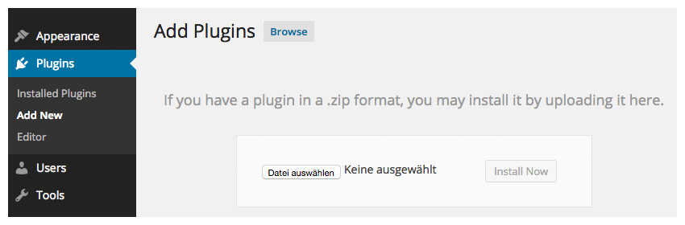
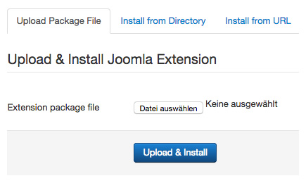

Install Widgetkit
To install Widgetkit, you can either setup a theme demo package that includes Widgetkit 2 – currently, these are themes starting from January 2015 – or you can manually install Widgetkit in your CMS.
Requirements
- PHP 5.3+
- PHP GD extension
If any of these requirements are missing, you might need to contact your webhost and ask them to install or enable the needed extensions.
Install in WordPress
- To install Widgetkit, use the plugin manager in the WordPress administration. Go to Plugins » Add New and click on the tab Upload.
- Click Choose..., select the downloaded Widgetkit zip archive and hit Install Now.
- After the activation in the plugin manager you will see a Widgetkit menu item in the administration menu on the left. Just click it to get started!

Install in Joomla

- To install Widgetkit, use the extensions installer in the Joomla administration. Go to Extensions » Extension Manager.
- Click Browse..., select the downloaded Widgetkit archive and hit Upload & Install
- That's it. You're done! To start, simply go to Components » Widgetkit.
Install theme with demo content
- Download the demo package of a current theme (starting with themes from January 2015).
- Follow the instructions for installing a demo package for {doc:wordpress text:WordPress} or {doc:joomla text:Joomla}.
- You will have a WordPress/Joomla instance running with an installed version Widgetkit 2 and some demo content.
Troubleshooting
If the installation does not work this way in WordPress, you may want to try to install the Widgetkit this way:
- Download the latest Widgetkit version and unpack all files to a local directory called widgetkit.
- Using FTP, upload this directory to the /wp-content/plugins directory of your WordPress installation on your server.
- Go to Plugins » Installed Plugins in the WordPress administration and Widgetkit will appear in the overview of all available plugins.
- Click on Activate to activate the newly installed Widgetkit plugin.
If the installation does not work this way in Joomla, you may want to try to install the Widgetkit this way:
- Download the latest Widgetkit version and unpack all files to a local directory.
- Using FTP, upload this directory to the /tmp directory of your Joomla installation on your server.
- Go to the extensions installer in the Joomla administration, use the "Install from Directory" option to set the directory of your uploaded Widgetkit files.
- Click on the Install button and Joomla will install it from the given directory.